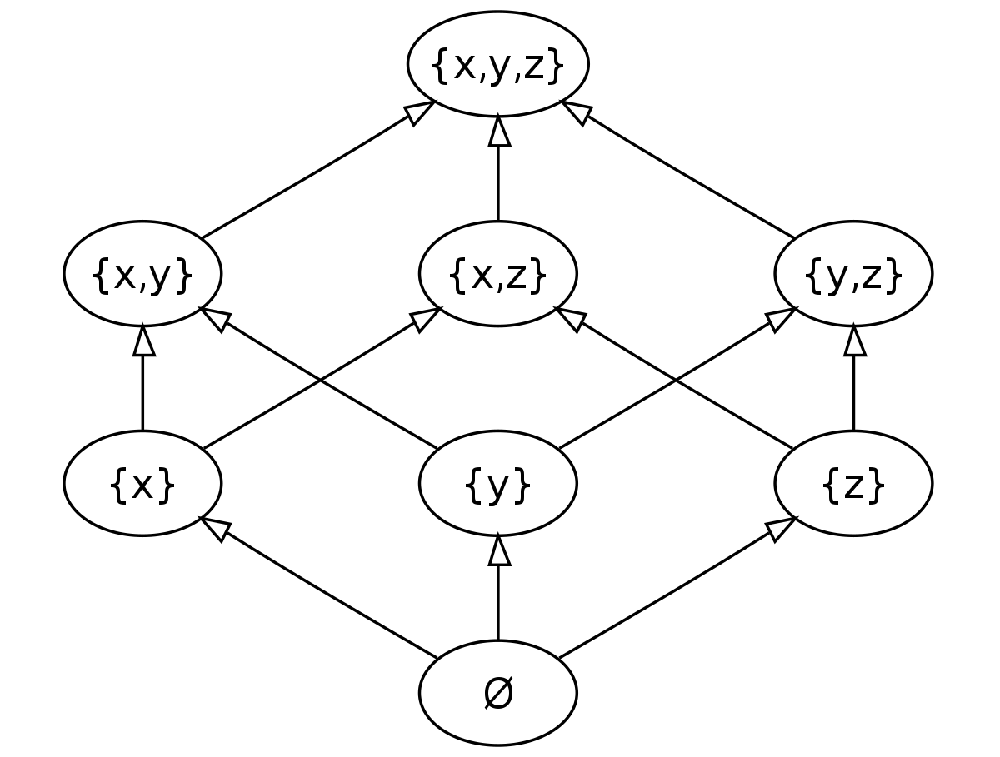

In mathematics, especially order theory, a partially ordered set (also poset) formalizes and generalizes the intuitive concept of an ordering, sequencing, or arrangement of the elements of a set. A poset consists of a set together with a binary relation indicating that, for certain pairs of elements in the set, one of the elements precedes the other in the ordering. The relation itself is called a "partial order." The word partial in the names "partial order" and "partially ordered set" is used as an indication that not every pair of elements needs to be comparable. That is, there may be pairs of elements for which neither element precedes the other in the poset. Partial orders thus generalize total orders, in which every pair is comparable.
